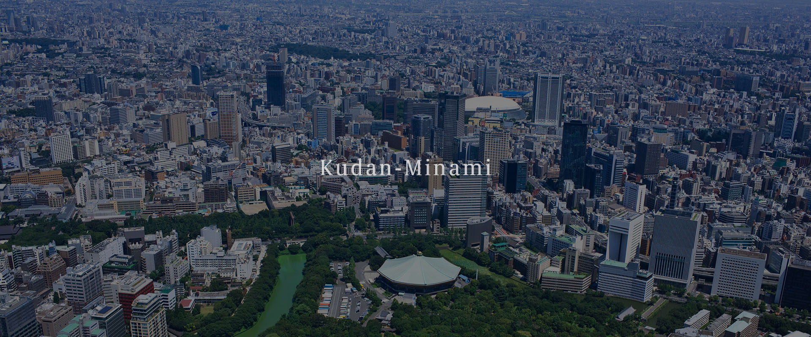
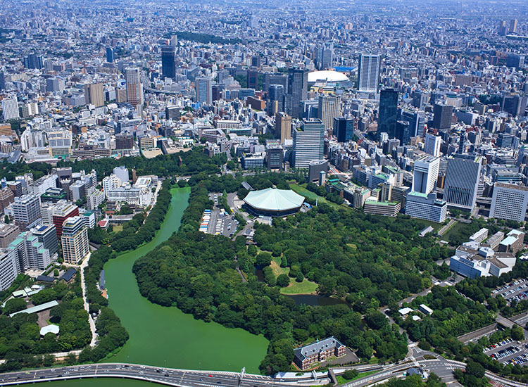
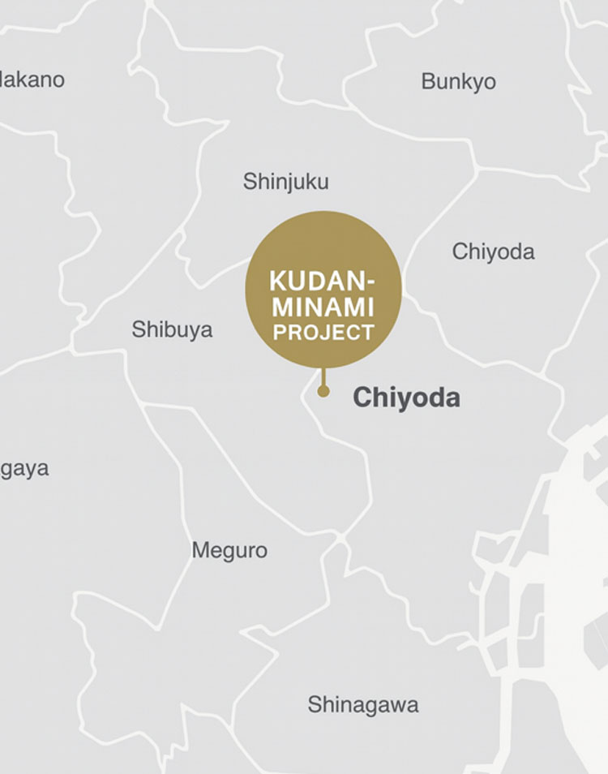
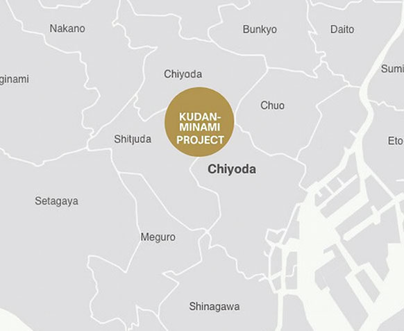

NEW RELEASES
（仮称）千代田区九段南 1丁目 PJ


（仮称）千代田区九段南 1丁目 PJ
当社は、東京都千代田区九段南において、新規事業用地を取得しましたのでお知らせいたします。当該事業用地は、内堀通りを隔てお濠（清水濠）に面し、その先には北の丸公園、日本武道館、東京国立近代美術館、皇居東御苑などが広がり、更に皇居越しに都心の摩天楼群を望める開放性の高い稀有で得がたい立地となります。あわせて、江戸時代には江戸城の内堀を取り囲む形で大名の武家屋敷が立ち並んでいた歴史ある一画に位置します。
また当該事業用地は、東京メトロ東西線「竹橋」駅まで徒歩 4 分、都営地下鉄三田線・新宿線・東京メトロ半蔵門線「神保町」駅まで徒歩 6 分、東京メトロ東西線・半蔵門線・都営地下鉄新宿線「九段下」駅まで徒歩8分でアクセス可能であり交通利便性に優れております。この立地特性を活かした開発事業に取り組んでまいります。

【新規取得事業用地の概要】
（仮称）千代田区九段南 1丁目 PJ
所 在 地東京都千代田区九段南 1丁目 1-5 他
敷地面積848.98m²



PRIME MEMBERSHIP
プライムメンバーシップ
会員様には、一般公開前の最新情報をご案内。
日々の暮らしを豊かに彩る唯一無二の情報や、
次世代のライフスタイルを提案する特典をぜひご体感ください。
※掲載の地図は略図のため、省略されて表現されています。 ※掲載の建築家及び実績写真は提供いただいたものです。